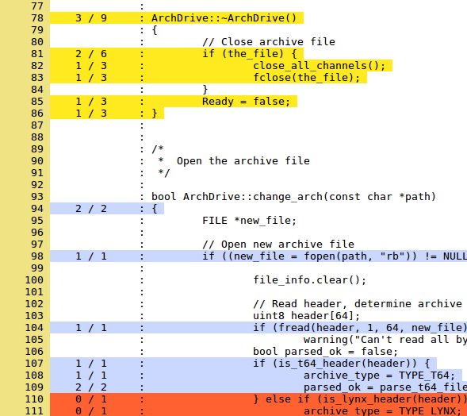

Kcov - code coverage
Kcov is a code coverage tester for compiled programs, Python scripts and shell scripts. It allows collecting code coverage information from executables without special command-line arguments, and continuosly produces output from long-running applications. If you use and like kcov, feel free to make a small donation:
Using kcov is as simple as
$ kcov /path/to/outdir executable [args for the executable]
The main features of kcov are:
- Supports both compiled (ELF) binaries, Python programs and shell scripts (sh/bash)
- Collects code coverage information from binaries directly - no compilation options
- HTML and Cobertura XML output without processing steps
- With Cobertura output, kcov coverage data can be easily integrated in the Jenkins continuous integration server.
- Shared libraries linked to the application are transparently covered
- kcov can accumulate data from multiple runs of the same program
- kcov also accumulates data from multiple programs, so that common source code can be analyzed in total
- kcov generates an updated web page every second, so long-running programs can be watched "live"
- kcov allows output to be sorted, either by coverage percentage or filename
- kcov allows specifying paths to include and exclude in the coverage, thereby limiting noise from system header files etc
- kcov allows multiple program coverage to be kept in a single HTML output directory, and will automatically add more programs as they are run
- build-id is automatically used to find source code, when applicable
You can see some example kcov coverage output for kcov itself and python scripts here. Source code for Kcov is available at github and more information on the implementation can be found in this blog post.
Code coverage can be useful to find bugs. Let's say you, by mistake, managed to add an extra goto fail; in your code - that shows up quite well in the coverage report:

When using kcov together with Jenkins, you get reports like these:

A running Jenkins instance with kcov coverage can be found here (covering kcov itself).
kcov is based on bcov by Thomas Neumann.
Download
The latest version is available here:
kcov-22.tar.gz
Author: Simon Kagstrom